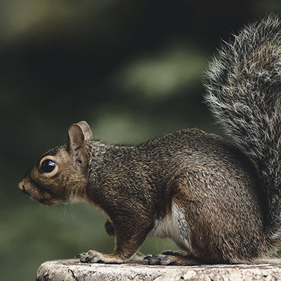

Animais Fantásticos


Raposa
A raposa é um mamífero carnívoro que pertence à família dos canídeos, a mesma dos cães e lobos. Ela é conhecida por seu corpo ágil, focinho fino, orelhas pontudas e uma cauda longa e peluda. Existem várias espécies de raposas espalhadas pelo mundo, vivendo em florestas, campos, desertos e até perto de áreas urbanas.
Esse animal possui hábitos geralmente noturnos e é considerado muito inteligente e adaptável. A raposa se alimenta de pequenos animais, como roedores e aves, mas também pode comer frutas, insetos e outros alimentos disponíveis no ambiente. Sua habilidade de caça e sua atenção aos sons e movimentos ajudam na sobrevivência
Além de sua importância no equilíbrio dos ecossistemas, a raposa também aparece em muitas histórias, lendas e fábulas, geralmente representando astúcia e esperteza. Em várias culturas, ela é vista como um símbolo de inteligência e estratégia.
Esquilo
O esquilo é um pequeno mamífero roedor conhecido por seu corpo ágil, olhos grandes e cauda longa e bem peluda. Ele pertence à família dos esquilídeos e pode ser encontrado em várias partes do mundo, principalmente em florestas, parques e áreas arborizadas.
Esse animal é muito ativo durante o dia e passa grande parte do tempo procurando alimento. O esquilo se alimenta principalmente de nozes, sementes, frutas e às vezes insetos. Ele também é famoso por guardar comida em diferentes lugares para comer depois, especialmente durante o inverno.
Além de serem rápidos e bons escaladores, os esquilos têm um papel importante na natureza, pois ajudam a espalhar sementes e contribuem para o crescimento de novas plantas. Sua aparência simpática e comportamento curioso fazem com que sejam animais bastante admirados.
Urso
O urso é um mamífero de grande porte pertencente à família dos ursídeos. Ele possui corpo forte, patas grandes com garras afiadas e uma pelagem espessa que ajuda a protegê-lo do frio. Os ursos vivem em diferentes regiões do mundo, como florestas, montanhas e áreas geladas.
Esse animal pode ter alimentação variada, dependendo da espécie. Muitos ursos são onívoros, ou seja, comem tanto plantas quanto carne, incluindo frutas, raízes, peixes, insetos e pequenos animais. Algumas espécies também passam por um período de hibernação durante o inverno, quando ficam longos períodos descansando.
Os ursos são importantes para o equilíbrio da natureza e também aparecem em muitas histórias, símbolos e culturas ao redor do mundo. Apesar de sua aparência forte e imponente, muitas espécies enfrentam ameaças devido à perda de habitat e à ação humana.
Lobo
O lobo é um mamífero carnívoro da família dos canídeos, a mesma dos cães, raposas e coiotes. Ele possui corpo forte, focinho alongado, orelhas pontudas e uma pelagem espessa que pode variar de cor, como cinza, branco, preto ou marrom. Os lobos vivem principalmente em florestas, montanhas, tundras e planícies.
Esse animal é conhecido por viver e caçar em **alcateias**, que são grupos organizados com hierarquia. Os lobos se comunicam através de uivos, sons e linguagem corporal, o que ajuda a manter o grupo unido. Sua alimentação é baseada principalmente em carne, como cervos, alces e outros animais de médio porte.
Os lobos têm um papel importante no equilíbrio dos ecossistemas, pois ajudam a controlar a população de outros animais. Ao longo da história, eles também apareceram em muitas lendas, histórias e culturas, sendo frequentemente associados à força, lealdade e espírito de grupo.
Macaco
O macaco é um mamífero pertencente ao grupo dos primatas, o mesmo grupo dos humanos e dos gorilas. Ele é conhecido por seu corpo ágil, mãos que conseguem segurar objetos e, em muitas espécies, uma cauda que ajuda no equilíbrio. Os macacos vivem principalmente em florestas tropicais, onde passam grande parte do tempo nas árvores.
Esses animais são muito inteligentes e costumam viver em grupos. Eles se comunicam por sons, expressões faciais e movimentos do corpo. A alimentação dos macacos geralmente inclui frutas, folhas, sementes, flores e, às vezes, insetos ou pequenos animais.
Os macacos têm um papel importante na natureza, pois ajudam a espalhar sementes e contribuem para o crescimento das florestas. Além disso, são conhecidos por seu comportamento curioso, brincalhão e por sua grande capacidade de aprendizado.
Leão
O leão é um grande mamífero carnívoro da família dos felinos. Ele é conhecido por seu corpo forte, dentes afiados e, no caso dos machos, pela grande juba ao redor da cabeça. Os leões vivem principalmente nas savanas e campos abertos da África, embora também tenham existido em outras regiões no passado.
Esse animal é famoso por viver em grupos chamados **bandos** ou **alcateias de leões**, algo incomum entre os felinos. Dentro do grupo, as leoas geralmente são responsáveis pela caça, enquanto o macho protege o território. Sua alimentação é baseada principalmente em carne, como zebras, antílopes e outros animais de médio e grande porte.
O leão é frequentemente chamado de **“rei da selva”** por causa de sua força, presença imponente e posição no topo da cadeia alimentar. Ao longo da história, ele também se tornou um símbolo de coragem, poder e liderança em diversas culturas ao redor do mundo.
FAQ
- O que esses animais têm em comum?
- Todos eles são mamíferos, ou seja, animais que nascem do ventre da mãe e se alimentam de leite quando são filhotes.
- Quais deles são carnívoros?
- O leão, o lobo e a raposa são principalmente carnívoros, pois se alimentam de outros animais.
- Qual desses animais vive mais nas árvores?
- O macaco e o esquilo passam grande parte do tempo nas árvores, onde encontram alimento e proteção.
- Qual é o maior desses animais?
- O urso é o maior entre eles, podendo pesar centenas de quilos dependendo da espécie.




Números
Contato

- animais@fantasticos.com
- +55 (35) 9999-9999
- Rua do Conde, nº 21
- Minas Gerais - MG
- Doe 0 bitcoin para nos ajudar
- Seg à Sex das 8 às 18